Europe
 Acropolis of AthensGreece
Acropolis of AthensGreece AlhambraSpain
AlhambraSpainArc de TriompheFrance
 Basilica and Expiatory Church of the Holy FamilySpain
Basilica and Expiatory Church of the Holy FamilySpainBig BenUnited Kingdom
 Brandenburg GateGermany
Brandenburg GateGermanyBuckingham PalaceUnited Kingdom
Charles BridgeCzechia
Cologne CathedralGermany
ColosseumItaly
 Eiffel TowerFrance
Eiffel TowerFranceEphesusTürkiye
 Hagia SophiaTürkiye
Hagia SophiaTürkiye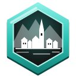
HallstattAustriaLe Mont Saint-MichelFrance
 Leaning Tower of PisaItaly
Leaning Tower of PisaItaly Manneken PisBelgium
Manneken PisBelgium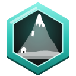
MatterhornSwitzerland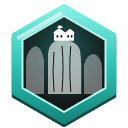
MeteoraGreece Milan CathedralItaly
Milan CathedralItaly Mosque-Cathedral of CordobaSpain
Mosque-Cathedral of CordobaSpain Neuschwanstein CastleGermany
Neuschwanstein CastleGermany Notre-Dame de ParisFrance
Notre-Dame de ParisFrance Palace of VersaillesFrance
Palace of VersaillesFrance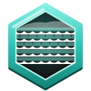
PamukkaleTürkiye PantheonItaly
PantheonItalyPlitvice Lakes National ParkCroatia
PompeiiItaly
 Prague CastleCzechia
Prague CastleCzechiaRed SquareRussia
 RijksmuseumNetherlands
RijksmuseumNetherlands Schönbrunn PalaceAustria
Schönbrunn PalaceAustria St. Basil's CathedralRussia
St. Basil's CathedralRussiaSt. Peter's BasilicaVatican City
 Stari MostBosnia and Herzegovina
Stari MostBosnia and Herzegovina StonehengeUnited Kingdom
StonehengeUnited KingdomSultan Ahmed MosqueTürkiye
The Little MermaidDenmark
 Tower BridgeUnited Kingdom
Tower BridgeUnited Kingdom Tower of LondonUnited Kingdom
Tower of LondonUnited KingdomWinter PalaceRussia
Africa
 Abu SimbelEgypt
Abu SimbelEgypt Aït BenhaddouMorocco
Aït BenhaddouMorocco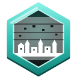
Bandiagara EscarpmentMaliBasilica of Our Lady of Peace of YamoussoukroCôte d'Ivoire
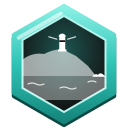
Cape of Good HopeSouth Africa CarthageTunisia
CarthageTunisia ChefchaouenMorocco
ChefchaouenMoroccoFasil GhebbiEthiopia
Great Mosque of DjennéMali
Great Mosque of KairouanTunisia
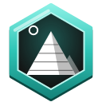
Great Pyramid of GizaEgyptGreat ZimbabweZimbabwe
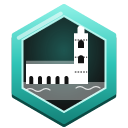
Hassan II MosqueMorocco Island of MozambiqueMozambique
Island of MozambiqueMozambiqueKarnak Temple ComplexEgypt
MeroëSudan
 Mount KilimanjaroTanzania
Mount KilimanjaroTanzaniaSidi Bou SaidTunisia
 Stone TownTanzania
Stone TownTanzaniaTable MountainSouth Africa
The Great SphinxEgypt
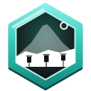
Valley of the KingsEgypt Victoria FallsZambia
Victoria FallsZambia VolubilisMorocco
VolubilisMoroccoThe Americas
 Angel FallsVenezuela
Angel FallsVenezuela Arenal VolcanoCosta Rica
Arenal VolcanoCosta RicaCathedral of BrasíliaBrazil
 Chichen ItzaMexico
Chichen ItzaMexico Christ the RedeemerBrazil
Christ the RedeemerBrazil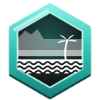
CopacabanaBrazilCopánHonduras
 Cotopaxi volcanoEcuador
Cotopaxi volcanoEcuador Empire State BuildingUnited States
Empire State BuildingUnited States Golden Gate BridgeUnited States
Golden Gate BridgeUnited StatesGrand CanyonUnited States
Great Blue HoleBelize
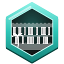
Iguaçu FallsArgentinaKaieteur FallsGuyana
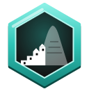
Machu PicchuPeru Maya Ruins of TulumMexico
Maya Ruins of TulumMexicomoaiChile
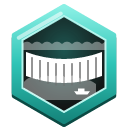
Niagara FallsUnited States Old HavanaCuba
Old HavanaCuba Palace of Fine artsMexico
Palace of Fine artsMexico Panama CanalPanama
Panama CanalPanama Perito Moreno GlacierArgentina
Perito Moreno GlacierArgentina Salar de UyuniBolivia
Salar de UyuniBolivia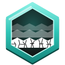
SaqsaywamanPeru Statue of LibertyUnited States
Statue of LibertyUnited StatesSugarloaf MountainBrazil
 TeotihuacanMexico
TeotihuacanMexico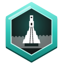
TikalGuatemalaTiticacaPeru
 Torres del Paine National ParkChile
Torres del Paine National ParkChileMiddle East and South Asia
Azadi TowerIran
BaalbekLebanon
BayterekKazakhstan
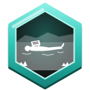
Dead SeaJordan Flame TowersAzerbaijan
Flame TowersAzerbaijanHarmandir SahibIndia
Hawa MahalIndia
HegraSaudi Arabia
 Kalyan MinaretUzbekistan
Kalyan MinaretUzbekistan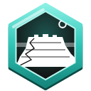
MasadaIsrael Museum of Islamic ArtQatar
Museum of Islamic ArtQatar Naqsh-e Jahan SquareIran
Naqsh-e Jahan SquareIranOld City of JerusalemIsrael
 Paro TaktsangBhutan
Paro TaktsangBhutanPersepolisIran
PetraJordan
Qutb MinarIndia
Red FortIndia
 RegistanUzbekistan
RegistanUzbekistan SigiriyaSri Lanka
SigiriyaSri Lanka Sultan Qaboos Grand MosqueOman
Sultan Qaboos Grand MosqueOman Taj MahalIndia
Taj MahalIndia Temple of the ToothSri Lanka
Temple of the ToothSri Lanka Wadi RumJordan
Wadi RumJordan Ziggurat of UrIraq
Ziggurat of UrIraqEast Asia and Oceania
Angkor WatCambodia
 BaganMyanmar
BaganMyanmar Batu CavesMalaysia
Batu CavesMalaysia Borobudur TempleIndonesia
Borobudur TempleIndonesia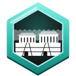
BulguksaSouth KoreaChocolate HillsPhilippines
 Forbidden CityChina
Forbidden CityChina Grand PalaceThailand
Grand PalaceThailand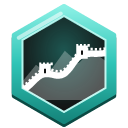
Great Wall of ChinaChinaGyeongbokgungSouth Korea
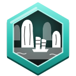
Ha Long BayVietnamHimeji CastleJapan
 Itsukushima ShrineJapan
Itsukushima ShrineJapan Marina Bay SandsSingapore
Marina Bay SandsSingapore Milford Sound / PiopiotahiNew Zealand
Milford Sound / PiopiotahiNew Zealand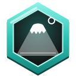
Mount FujiJapanPetronas TowersMalaysia
 Pha That LuangLaos
Pha That LuangLaosPrambanan TempleIndonesia
Shwedagon PagodaMyanmar
 Summer PalaceChina
Summer PalaceChinaSydney Harbour BridgeAustralia
Sydney Opera HouseAustralia
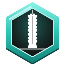
Taipei 101Taiwan Temple of HeavenChina
Temple of HeavenChina Terracotta ArmyChina
Terracotta ArmyChinaTokyo SkytreeJapan
 Tokyo TowerJapan
Tokyo TowerJapan UluruAustralia
UluruAustralia Wat ArunThailand
Wat ArunThailand